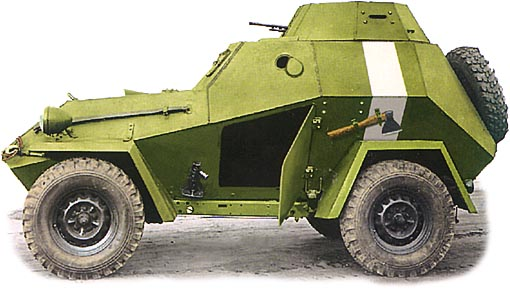
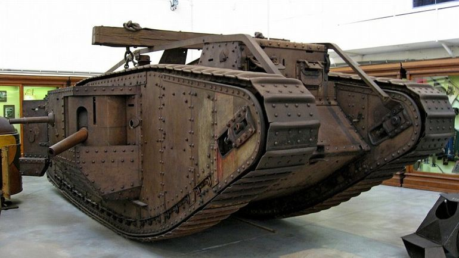

Содержание
Что такое танк?
Танк (англ. tank) — бронированная боевая машина, чаще всего на гусеничном ходу, как правило с пушечным и дополнительным пулемётным вооружением, обычно во вращающейся полноповоротной башне, предназначенным в основном для стрельбы прямой наводкой.
Краткая история танков
Этапы развития танкостроения
Первым начали использовать паровоз. Сначала для переброски войск, а позже на железнодорожную платформу установили пушку, а для защиты установили бронированные щиты. Так получился первый бронепоезд, который применили американцы в 1862 году во время гражданской войны в северной Америке. Использование бронепоездов накладывает свои ограничения — нужны железнодорожные пути. Военные стали думать о совмещении в транспортном средстве высокой огневой мощи и подвижности.
Следующим этапом стало бронирование обычных легковых автомобилей с установкой на них пулеметного или легкопушечного вооружения. Они должны были использоваться для прорыва переднего края обороны противника и доставки живой силы.
Главной проблемой в истории развития танкостроения до Первой мировой войны было отсутствие мотивации и непонимание возможностей применения бронированной техники. Про основы применения бронированной повозки еще в XV веке Леонардо да Винчи писал: « Мы построим закрытые колесницы, которые проникнут в неприятельские линии и не смогут быть уничтожены толпой вооруженных людей, а позади них может следовать пехота без особого риска и всякого багажа». На практике никто всерьез не воспринимал «дорогие железные игрушки», как назвал в свое время прототипы танков военный министр Англии.
Причины создания первого танка и его предназначение
Настоящее признание танки получили во время Первой мировой войны. Первая мировая была войной позиционной, для неё характерна многоэшелонированная сплошная линия обороны с пулемётами и архитектурными сооружениями. Для прорыва использовалась артподготовка, но из-за малой дальности стрельбы она могла подавить, и то довольно условно, только огневые точки передней линии. При захвате первой линии, захватившие неизбежно сталкивались со следующей, для подавления которой нужно было подтягивать артиллерию. Пока наступающие занимались артиллерией, обороняющие войска мобилизировали резервы и отвоевывали занятую линию и уже сами начинали переходить в атаку. Такое безрезультатное передвижение могло продолжаться довольно долго. Например. В феврале 1916 года в битве при Вердене, к которой немцы готовились почти два месяца, участвовало больше одной тысячи орудий. За десять месяцев противостояния было израсходовано больше 14 млн. снарядов, а число погибших с обеих сторон превысило один млн. При всем при этом, немцы продвинулись аж на – 3 километра в глубь обороны французов.
Перед военными четко стал вопрос о необходимости транспортного средства, которое могло б прорывать линии обороны противника с полным подавлением огневых точек или как минимум оперативно доставлять артиллерию к очередным рубежам.
Бронепоезда по понятным причинам использоваться не могли, а бронеавтомобили быстро показали свою несостоятельность — слабую броню и неэффективное вооружение. Усиление бронирования и вооружения значительно повышало вес автомобиля, что наряду с колесной подвеской и слабыми двигателями проходимость бронеавтомобилей сводило к нулю. Несколько помогло улучшить ситуацию применение гусеничного тяжителя (гусениц). Опорные катки равномерно распределяли давление на почву, что существенно повышало проходимость по мягкому грунту.
Для увеличения огневой мощи и проходимости военные инженеры начали экспериментировать с размерами и весом новой боевой машины. Пробовали комбинировать гусеницы с колесами. Было среди них и несколько довольно неоднозначных проектов. Например. В России конструктор Лебеденко, и независимо от него в Англии майор Хетерингтон, в целях большей проходимости сконструировали танк на трех огромных колесах. Идея обеих конструкторов заключалась в обычном переезде канавы боевой машиной, поэтому Лебеденко предлагал создать танк с колесами диаметром 9 метров, а Хетерингтон соответственно 12 метров. Лебеденко даже создал опытный экземпляр, но во время испытаний он… застрял в первой же яме.
Из-за несовершенства представленных броневых машин, споры о необходимости их разработки и примирения среди военных продолжались до 15 сентября 1916. Этот день стал переломный в истории танкостроения и ведения войн вцелом. Во время битвы на реке Сомме, англичане впервые использовали свои новые танки. Из 42 двух бывших в наличии, в бою участвовали 32. Во время боя 17 из них по разным причинам вышли из строя, но и оставшиеся танки смогли помочь пехоте продвинуться в глубь обороны на 5 километров по всей ширине наступления, при этом потери в живой силе составили в 20 раз! меньше расчетных. Для сравнения можно вспомнить бой при Вердене.